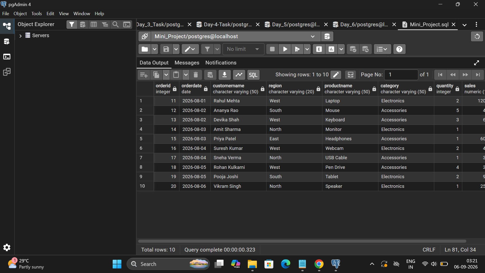
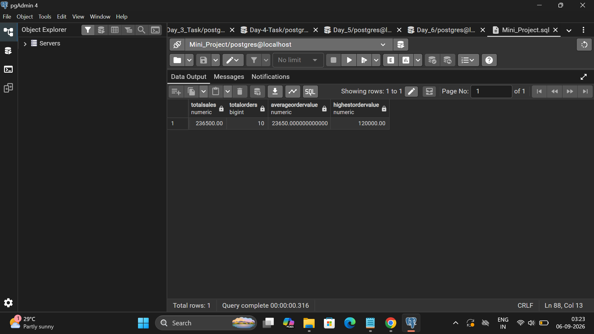
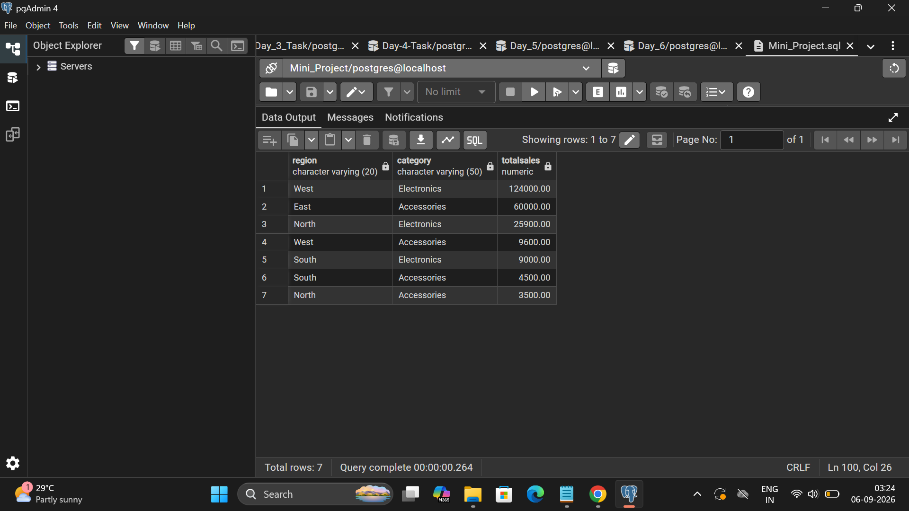
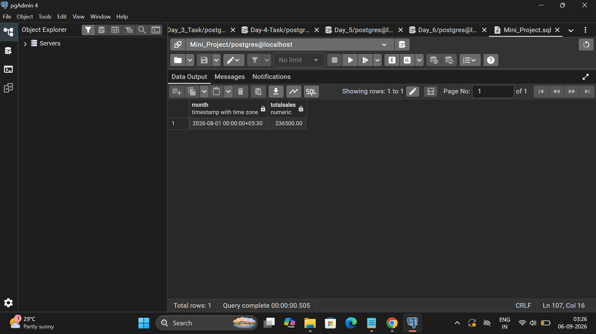
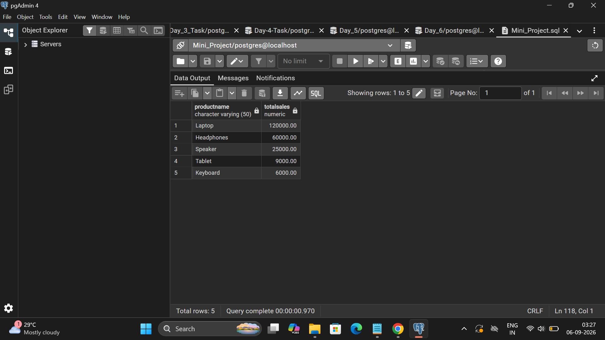
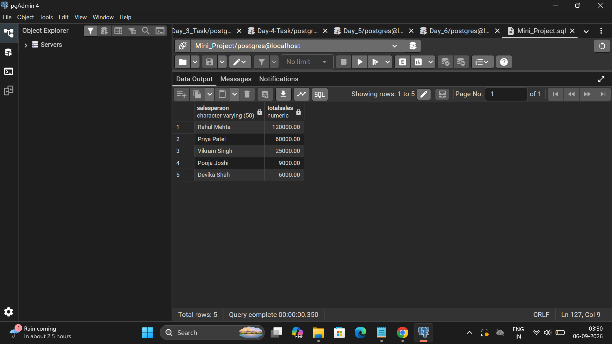

SQL Mini Project | PostgreSQL
This SQL Mini Project analyzes retail sales data using PostgreSQL. The project uses Orders, Customers and Products tables to analyze sales performance, regions, categories, products and customers.
SELECT
o.orderid,
o.orderdate,
c.customername,
c.region,
p.productname,
p.category,
o.quantity,
o.sales
FROM Orders o
INNER JOIN Customers c
ON o.customerid = c.customerid
INNER JOIN Products p
ON o.productid = p.productid;
Use: Combines Orders, Customers and Products tables for complete retail sales analysis.
SELECT
SUM(sales) AS TotalSales,
COUNT(orderid) AS TotalOrders,
AVG(sales) AS AverageOrderValue,
MAX(sales) AS HighestOrderValue
FROM Orders;
Use: Calculates Total Sales, Total Orders, Average Order Value and Highest Order Value.
SELECT
c.region,
p.category,
SUM(o.sales) AS TotalSales
FROM Orders o
INNER JOIN Customers c
ON o.customerid = c.customerid
INNER JOIN Products p
ON o.productid = p.productid
GROUP BY c.region, p.category
ORDER BY TotalSales DESC;
Use: Analyzes total sales by region and product category.
SELECT
DATE_TRUNC('month', orderdate) AS Month,
SUM(sales) AS TotalSales
FROM Orders
GROUP BY DATE_TRUNC('month', orderdate)
ORDER BY Month;
Use: Analyzes monthly sales trends.
SELECT
p.productname,
SUM(o.sales) AS TotalSales
FROM Orders o
INNER JOIN Products p
ON o.productid = p.productid
GROUP BY p.productname
ORDER BY TotalSales DESC
LIMIT 5;
Use: Identifies the top 5 products based on total sales.
SELECT
c.customername,
SUM(o.sales) AS TotalSales
FROM Orders o
INNER JOIN Customers c
ON o.customerid = c.customerid
GROUP BY c.customername
ORDER BY TotalSales DESC
LIMIT 5;
Use: Identifies the top 5 customers based on total sales.





